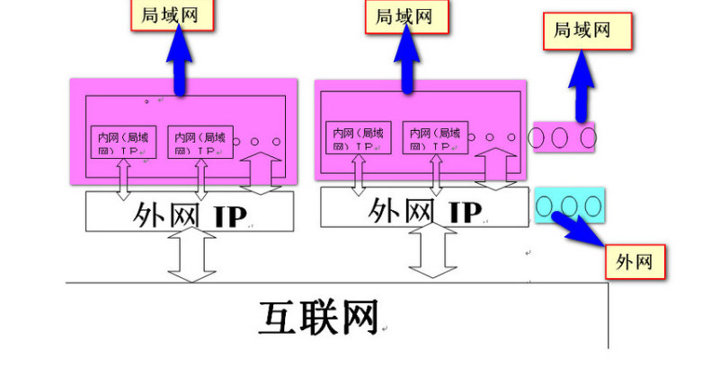
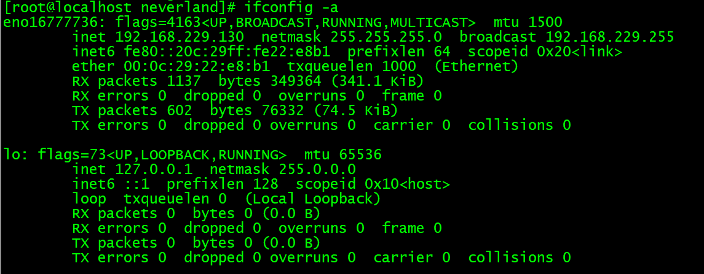
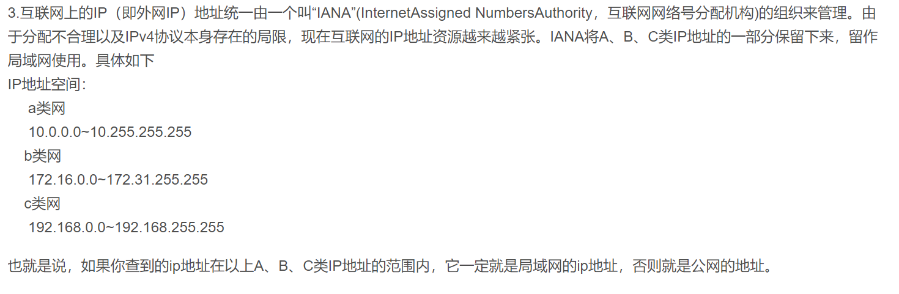

后端02
任务一
1.了解IP和端口的区别与联系
IP（Internet Protocol）是网络之间互连的协议，"端口"是英文port的意译，可以认为是设备与外界通讯交流的出口（0-65535）
区别
IP和端口号组成了网络地址。但IP就是一个电脑节点的网络物理地址，端口是该计算机逻辑通讯接口。
IP地址是你的电脑的网络地址，主要是用于查找到你的电脑的。而端口号是区分不同的进程的，也就是说一个电脑上有多个应用程序就需要使用不同的端口号进行区分，可以说IP是网络层地址，而端口号是传输层地址。
联系：
一台拥有IP地址的主机可以提供许多服务，这些服务可以通过1个IP地址来实现，但主机若想区分不同的网络服务，则需要通过“IP地址+端口号”，即如果把IP比作一间大房子，端口就是让房子与外界各种环境连接的门窗。
2.查看防火墙

第一次查看没有开启的端口（？），在手动打开80后，出现了80端口
3.内网IP与外网IP的区别与联系
区别
内网一般指局域网内部分配的IP地址，外网一般是指连接该局域网以外的网络用的IP地址
打个比方，我的宿舍在（成都市成华区建设北路电子科大沙河校区）的（17栋***），第一个括号内的内容就如同外网IP，第二个括号内的内容就如同内网IP
1.外网IP具有世界范围的唯一性，而内网IP只在局域网内部具有唯一性，局域网内每台计算机的IP地址在本局域网内具有互异性，是不可重复的
2.一个局域网里所有电脑的内网IP是互不相同的，但公用一个外网IP
3.外网ip由于是独立的ip地址，所以会比内网ip拥有更便利的“通行权”，但它会让你的设备更容易暴露在网络中，更易遭到攻击
联系
1.两个IP同时存在，只是一个对内，一个对外
2.内网里所有的计算机都是连接到这一个外网IP上，通过这一个外网IP对外进行交换数据的
打个比方，我住（17栋***），我想要看看校园外的大千世界，我就必须先走过（成都市成华区建设北路电子科大沙河校区），第一个括号内的内容就如同内网IP，第二个括号内的内容就如同外网IP

总的来说即表明：内网IP和外网IP的工作原理就是，大家在使用局域网中的电脑上网，都是通过想网关(路由器，交换机)发出请求，然后又网关使用外网IP链接到Internet网络上，接受到数据信息后，结果返回到外网IP，然后在分发到内网的IP上
为什么要分内网外网
1.IPV4规则下的ip地址是有限的，随着电脑用户的增多，如果只有一种网络IP，每个电脑都拥有各不相同的独立IP，就像身份证，所以IP地址不够用，于是内网IP、外网IP应运而生，即在某个地区或者区域的一个网关下面有很多的路由设备，每个网关为这些区域内的路由设备分配IP，而这些IP的外网IP是相同的，只有内网IP不同，由此解决了大量主机接入网络的问题。
2.有一些企业分内网外网，可能是因为企业有一些自己需要保密的东西，存放在内网里，建设的时候需要与物理网物理隔离。
4.查看我的虚拟机

我的IP是192.168.229.130，是内网IP，不知道这么判断对不对......

任务二
1.远程连接
我使用的secureCRT，在虚拟机上ip addr后，即可选择快速连接：

连接后输入用户名和密码就连接成功啦！
2.将主机文件上传至虚拟机


上传成功
3.说说其他能实现远程连接的协议
SSH
SSH 为 Secure Shell 的缩写，建立在应用层基础上的专为远程登录会话和其他网络服务提供安全性的协议。
还有其他什么协议能实现远程连接：
RDP：远程桌面协议，基于图形界面的远程管理
RFB：图形化远程管理协议（VNC远程管理工具基于此协议）
TelNet：在终端使用者的电脑上使用telnet程序，即可连接到对应服务器，在telnet程序上输入命令，可直接作用于对应服务器。
FTP：进行远程文件传输
NX：提供了在高延迟、低带宽环境中接近本地速度 的应用程序响应链接
还有一些别的，teamviewer......
以下，因为我并没有用过其他协议，对这方面的认识比较浅表，目前只能很简单地谈一谈...
SSH的优势：
主要优势就是安全，SSH基于成熟的公钥加密体系，把所有传输的数据进行加密，使数据在传输时一般不被恶意破坏、漏露和篡改（在此之前的FTP或Telnet以明文形式在网络中传输账户密码和数据信息，就很不安全）
SSH的劣势：
- SSH服务只能实现基于文本的远程控制，而利用VNC可以实现图形化的远程控制。
- 由于网络波动，经常会出现卡顿、连接失败、传输速度较慢等现象,我有几次下载中途连接失败，非常难受。
任务三
1.配置公钥私钥


2.使它只能用密钥登陆


关于ssh登录的画图在后面
拓展选择
端口转发


又用了更详细的命令


试着登录其他未端口转发的虚拟机，发现不行

about ssh登录
密码登录

公钥登录

公钥登录比起密码登录的好处
公钥登录更加安全，密码登录的过程中使用了密码加密，如果在传送过程中遇到了中间人攻击，被截获到并被暴力破解，那账号密码就会暴露：我发送了登录请求，被中间人截获，中间人给我发送了他的公钥，我用我的密码对他的公钥进行加密后传送给了他，他用他的私钥解密，破解了我的密码，GAME OVER.
公钥登录的话，在整个验证过程中，公钥并不会被直接传输，即使被截获，中间人也并不能获得公钥真实信息，而且即使公钥信息被截取，中间人也会因为没有对应私钥，而无法解密随机数，从而无法登录。